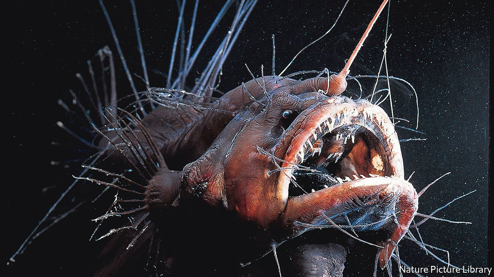

2021-08-11T11:57:19+00:00
Deep seas
深海
深海
A marine biologist dives to where blue gives way to black
一位海洋生物学家潜入由蓝变黑的深海
一位海洋生物學家潛入由藍變黑的深海
Helen Scales finds wonders, and threats, on the ocean floor
海伦·斯凯尔斯在洋底发现了奇观，也发现了威胁【《灿烂的深渊》书评】
海倫·斯凱爾斯在洋底發現了奇觀，也發現了威脅【《燦爛的深淵》書評】

MANY VISITORS only skim the surface of the ocean—swimming from the beach or slicing through whitecaps on a sailing boat. In “The Brilliant Abyss”, Helen Scales, a marine biologist whose previous books explored the shallower reaches of the sea, dives deep and revealingly into the realm below 660 feet where sunlit blue begins to give way to black.
许多游客对海洋的观览“流于表面”——他们在海滩附近游泳，或乘帆船穿过洁白的浪尖。在先前的著作中，海洋生物学家海伦·斯凯尔斯（Helen Scales）探索了海洋较浅的部分，而在《灿烂的深渊》（The Brilliant Abyss）一书中，她带领读者潜入660英尺以下的水域——在那里，阳光透不进来，蓝色的海水逐渐变成黑色。
許多遊客對海洋的觀覽“流於表面”——他們在海灘附近游泳，或乘帆船穿過潔白的浪尖。在先前的著作中，海洋生物學家海倫·斯凱爾斯（Helen Scales）探索了海洋較淺的部分，而在《燦爛的深淵》（The Brilliant Abyss）一書中，她帶領讀者潛入660英尺以下的水域——在那裡，陽光透不進來，藍色的海水逐漸變成黑色。
As Ms Scales notes, it is often said that more is known of the Moon’s surface, exposed to anyone with a telescope, than about the geography of the deep-sea floor, which a dark cloak of water obscures. It is a rugged, complex and shifting terrain—subject to earthquakes precipitated by the movement of tectonic plates, and punctuated by seamounts (mountains formed by volcanic activity) and hydrothermal vents that emit sulphurous, scalding fluids.
正如斯凯尔斯指出的那样，一个常见的说法是人们对月球表面的了解比对深海海底地理的了解还多；只要有台望远镜，人人都可以观月，而深海海底却被黑暗的海水掩盖。那里的地形崎岖、复杂又多变——容易受板块运动引发的地震的影响，而且四处还有海底山（火山活动形成的山）和喷涌着含硫的炽热液体的海底热泉。
正如斯凱爾斯指出的那樣，一個常見的說法是人們對月球表面的了解比對深海海底地理的了解還多；只要有台望遠鏡，人人都可以觀月，而深海海底卻被黑暗的海水掩蓋。那裡的地形崎嶇、複雜又多變——容易受板塊運動引發的地震的影響，而且四處還有海底山（火山活動形成的山）和噴涌着含硫的熾熱液體的海底熱泉。
In these underwater extremes of dark and cold, and the boiling waters disgorged by vents, life survives and even thrives. It includes sea cucumbers that slough off their illuminated skin to distract predators, yeti crabs as hairy as their name suggests, fish masked in ultra-black skin that makes them all but invisible, and a sponge that looks like a glass of milk frozen in mid-spill. As well as its role as a climate regulator and carbon sink, the deep, in its vibrant profusion, prompts reflections on the possibility of life on other planets.
在这黑暗而寒冷的水下极端环境和海底热泉涌出的滚烫液体之中仍有生命存活下来，甚至还生机勃勃。其中包括海参，它们可以蜕下发光的皮肤以分散捕食者的注意力；雪人蟹，和它们名字中的雪人一样毛茸茸的；身覆超黑皮肤的鱼类，几乎能够隐形；还有一种海绵，看起来像一杯溢出时被冻住的牛奶。生机盎然的深海除了充当气候调节器和碳汇之外，还促使人们思索其他星球上存在生命的可能性。
在這黑暗而寒冷的水下極端環境和海底熱泉湧出的滾燙液體之中仍有生命存活下來，甚至還生機勃勃。其中包括海參，它們可以蛻下發光的皮膚以分散捕食者的注意力；雪人蟹，和它們名字中的雪人一樣毛茸茸的；身覆超黑皮膚的魚類，幾乎能夠隱形；還有一種海綿，看起來像一杯溢出時被凍住的牛奶。生機盎然的深海除了充當氣候調節器和碳匯之外，還促使人們思索其他星球上存在生命的可能性。
Less beguiling things lurk down there too. Plastic bags and packaging have been spotted by submersibles in the seven-mile-deep Mariana Trench. Nuclear waste, chemicals and oil spills, such as the one from the Deepwater Horizon rig in 2010, have turned sections of sea floor into poisonous dumps. Exploitation adds to the blight. The orange roughy, a white-fleshed fish that congregates around seamounts (also known, less appetisingly, as a slimehead) has been dangerously overfished.
海底也潜伏着一些不那么诱人的东西。在七英里深的马里亚纳海沟，潜水器发现了塑料袋和塑料包装。核废料、化学物质和石油泄漏（比如2010年“深水地平线”钻井平台的泄漏）已经将部分海底变成了有毒的垃圾场。资源开发加剧了灾难。一种栖息于海火山周围的白肉鱼胸棘鲷（又名slimehead，字面意思是“黏液头”，听着让人没什么胃口）被过度捕捞，已经到了濒危的地步。
海底也潛伏着一些不那麼誘人的東西。在七英里深的馬里亞納海溝，潛水器發現了塑料袋和塑料包裝。核廢料、化學物質和石油泄漏（比如2010年“深水地平線”鑽井平台的泄漏）已經將部分海底變成了有毒的垃圾場。資源開發加劇了災難。一種棲息于海火山周圍的白肉魚胸棘鯛（又名slimehead，字面意思是“黏液頭”，聽着讓人沒什麼胃口）被過度捕撈，已經到了瀕危的地步。
An experimental push to harvest sea-floor nodules laced with manganese, nickel, cobalt and other metals is another threat. The potential damage to the seabed from remotely operated machines is analogous, Ms Scales argues, to the most toxic mining on dry land. But the revenues could be huge. An analysis by the Massachusetts Institute of Technology calculated that a single seabed mine could net $1bn a year.
另一个威胁来自人们努力尝试开采海底结核，它们含有锰、镍、钴和其他金属。斯凯尔斯认为，远程遥控机器对海床可能造成的损害堪比陆地上毒性最大的采矿活动。但是收入可能是巨大的。麻省理工学院的一项分析计算出，单是一个海底矿一年就可净赚10亿美元。
另一個威脅來自人們努力嘗試開採海底結核，它們含有錳、鎳、鈷和其他金屬。斯凱爾斯認為，遠程遙控機器對海床可能造成的損害堪比陸地上毒性最大的採礦活動。但是收入可能是巨大的。麻省理工學院的一項分析計算出，單是一個海底礦一年就可凈賺10億美元。
And an ecological case for the initiative can be made. “I get very uncomfortable when people describe us as deep-sea miners,” says Gerard Barron of DeepGreen Metals, a deep-sea mining company targeting the metals used in electric-car batteries. “We want to help the world transition away from fossil fuels.” Because the long-term impact is unknown, Ms Scales is sceptical; her argument is compelling, even if her explanation of car batteries is a slog. Yet another marine biologist doubts that mining would be forestalled “even if we found unicorns on the sea floor”.
而且这一尝试还可能有生态上的理据。“听到人们把我们描述成深海矿工，我心里非常不舒服。”深海采矿公司“深绿金属”（DeepGreen Metals）的杰拉德·巴伦（Gerard Barron）说。该公司的目标是开采电动汽车电池中使用的金属。“我们希望能帮助世界摆脱化石燃料。”由于长期影响尚不得而知，斯凯尔斯对此持怀疑态度；她的论证很有说服力，尽管她对汽车电池的解释让人读得很辛苦。不过，另一位海洋生物学家怀疑海底采矿未等开始就会被阻止，“即便是在海底发现了独角兽”。
而且這一嘗試還可能有生態上的理據。“聽到人們把我們描述成深海礦工，我心裡非常不舒服。”深海採礦公司“深綠金屬”（DeepGreen Metals）的傑拉德·巴倫（Gerard Barron）說。該公司的目標是開採電動汽車電池中使用的金屬。“我們希望能幫助世界擺脫化石燃料。”由於長期影響尚不得而知，斯凱爾斯對此持懷疑態度；她的論證很有說服力，儘管她對汽車電池的解釋讓人讀得很辛苦。不過，另一位海洋生物學家懷疑海底採礦未等開始就會被阻止，“即便是在海底發現了獨角獸”。
Early European cartographers often used sea serpents to mark uncharted depths. Hic sunt dracones—Here be dragons—reads the inscription flagging an unfathomable stretch of water on a globe made in 1510. But the most threatening sea monster of all may be man. ■
早期的欧洲制图员经常使用海蛇来标记尚未被探索过的深水区。在一个1510年制作的地球仪上写着“此处有龙”（Hic sunt dracones）的字样，用以标记一片深不可测的水域。但最具威胁性的海怪可能还是人类。
早期的歐洲製圖員經常使用海蛇來標記尚未被探索過的深水區。在一個1510年製作的地球儀上寫着“此處有龍”（Hic sunt dracones）的字樣，用以標記一片深不可測的水域。但最具威脅性的海怪可能還是人類。